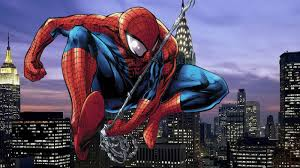

Spiderman: far from home

Spiderman: No Way Home': la idea de recrear el iconico meme del hombre araña surgió de Andrew Garfield Spiderman: No Way Home, Tom Holland, Tobey Marguire, y Andrew Grarfield recreando el famoso meme del hombre araña que lleva siendo viral muchos meses, donde ahora son tres los superhéroes los que se están señalando, como si no se conocieran, un momento que se pudo ver, de forma más sutil en la propia película
El meme, que viene, cuya imagen proviene del episodio de los dibujos animados de Spider-Man de 1967, 'doble indentidad', en el que un villano intenta hacerse pasar por el héroe, se ha compartido de nuevo para anunciar la venta de formatos domésticos y aparición en digital de la película el 22 de marzo con una imagen especial de los actores durante el rodaje, entre otros momentos detrás de las cámaras como Tobey Maguire imitando algunos pasos prohibidos de su infame baile en 'Spider-Man 3'